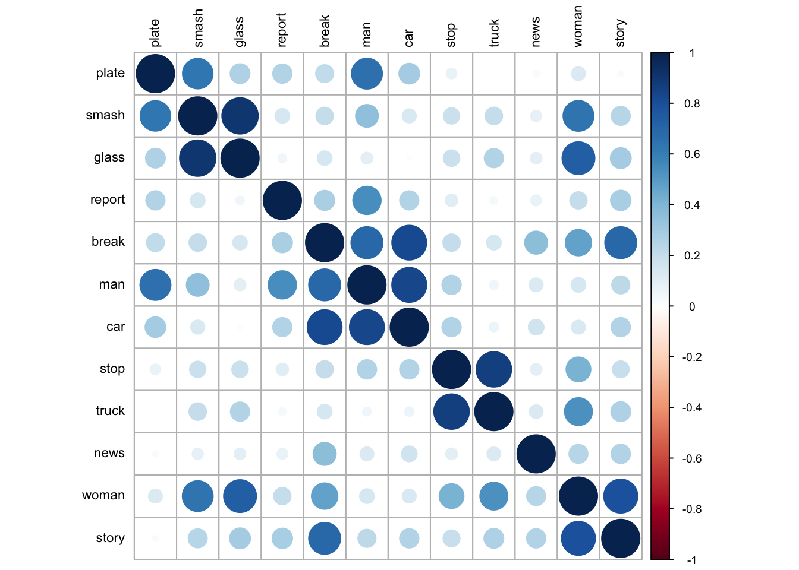

Even with just 1000 sentences (much fewer than the 20,000 in Jamieson et al.), I was able to reproduce the MDS solution.
I have a question about what the distances mean. They don’t seem to measure “direct” co-occurence, since man/woman, car/truck, glass/plate and news/story never appear in the same sentences together. Do they measure a higher-order similarity, since for e.g. stop only occurs with car/truck?
Implementing MINERVA-AL discrepancy encoding in “break” toy language
# Get echoes (semantic meaning vectors)meaning_de <-subset_semantic_vectors(dictionary, dictionary, env_vectors, toy_memory_de, tau =3)cosine_toy_de <-cosine(t(meaning_de))corrplot::corrplot(cosine_toy_de,method="circle",order="hclust",tl.col="black",tl.cex=.7,title="",cl.cex=.6)
# Get echoes (semantic meaning vectors)meaning_collins <-subset_semantic_vectors(dictionary, dictionary, env_vectors, toy_memory_collins, tau =3)cosine_toy_collins <-cosine(t(meaning_collins))corrplot::corrplot(cosine_toy_collins,method="circle",order="hclust",tl.col="black",tl.cex=.7,title="",cl.cex=.6)

There seems to be clustering!
library(plotly)
Attaching package: 'plotly'
The following object is masked from 'package:ggplot2':
last_plot
The following object is masked from 'package:stats':
filter
The following object is masked from 'package:graphics':
layout
The words are clustered differently but are still in discernible clusters. Stop, report and smash seem to be roughly equidistant from break, as in the original ITS diagram. However, as opposed to the ITS diagram, man and woman are far from each other. Perhaps a higher-order dimensionality (e.g. 3D) plot would make this more sensible?